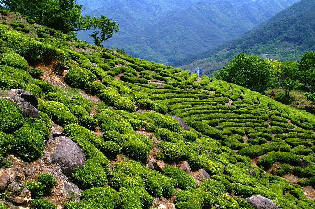
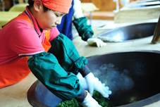
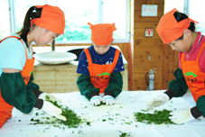
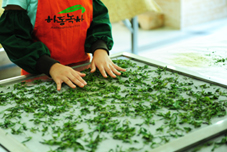
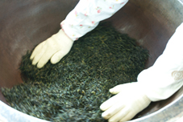
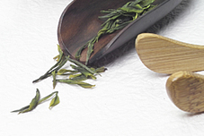

차 만들기
home > 녹차정보 > 차 만들기
01.차나무 재배
우리나라에서 자라는 소엽종의 차나무는 연평균 기온이 약 10℃ 이상으로 온난하고, 연평균 강수량이 약 1,500mm이상의 다습한 지역에서 잘 자란다. 우리나라는 대륙성 기후로 겨울에는 혹한이 심하고 하루 동안의 기온차가 매우 커서, 차나무가 자연상태로 자랄 수 있는 북방한계 위도가 북위 약 33.35정도 이다. 현재 우리나라의 차 재배지는 전라북도의 김제, 옥구, 남원과 경상남도의 함양, 밀양, 울산 지방의 남쪽 지역이며, 차 생산량의 대부분이 경남과 전남, 그리고 제주도에서 생산되고 있다.
02.차잎 따기
찻잎은 보통 4월 하순부터 5월 하순까지 따며, 따는 시기에 따라 우전, 세작, 중작, 대작으로 분류하며 홍차나 티백은 그 이후 시기로 넘어간다. 찻잎은 새순이 돋아나는 여린 잎 한ㆍ두마디를 따며 밤이슬을 흠뻑 머금은 오전에 따는 것이 최고요, 한낮에 따는 것은 그 다음이며, 흐린 날씨나 비가 올 때는 따지 않는다. 차의 잎은 햇살과 그늘이 잘 조화된 산골에서 자란 잎이 가장 좋고, 대 숲에서 찬 이슬을 먹으며 자란 잎을 둘째로 친다. 그리고, 물이 잘 빠지는 자갈밭에서 자란 것을 셋째로 치고, 사질토(砂質土)에서 자란 것을 그 다음으로 친다.
03.덖기
그날 따온 잎을 멍석에 깔아놓고 큰 잎, 묵은 잎, 줄기, 부스러기를 가려낸 다음, 솥이 잘 달구어지기를 기다렸다가 적당한 양을 넣고 빠른 시간에 덖는다. 불은 일정한 온도를 유지하도록 하고, 골고루 잘 덖어(익어)지면 꺼낸다. 열이 과하면 설익은 채 겉만 타고, 열이 약하면 푸른빛을 잃고, 또한 오래 끌면 너무 익어 데쳐지고, 빨리 꺼내면 설익게 된다. 잘 덖어진 찻잎은 원래의 색깔을 유지하지만, 타거나 열이 모자라면 불그스레하고 검으며 누렇게 된다. 차잎을 덖으면, 그 맛이 구수하고 향기가 좋아질 뿐만 아니라, 차잎의 수분을 제거함으로써 부패되거나 변질되는 것을 방지하고, 차의 성분을 오랫동안 보존하면서 운반과 보관이 편리한 이점이 있다.
04.비비기
잘 덖은 찻잎은 열기를 없애고 차의 성분이 배어들도록 멍석에서 비빈다. 찻잎을 살펴보면 동백잎이나 치자잎과 같이 얇은 막으로 싸여 있는 것을 볼 수 있다. 비비기 작업은 이 찻잎 표면의 막을 제거하거나 상처를 내어 물과 차가 융합할 때 차의 성분이 쉽게 물에 우러나게 하기 위한 것이다. 또한 찻잎의 즙액을 세포 밖으로 밀어내어 건조를 촉진시키는 작용도 한다. 찻잎의 덖기와 비비기는 불(온도)을 조절해가며 수차례 반복한다.
05.건조
건조의 앞 수순으로 멍석에서 비빈 찻잎을 서로 낱순이 되도록 분리시킨다. 전통적인 방법으로 차를 건조할때는, 온돌방에서 한지를 깔고 말리거나 선반에서 자연건조한다.
06.끝 덖기
건조의 앞 수순으로 멍석에서 비빈 찻잎을 서로 낱순이 되도록 분리시킨다. 전통적인 방법으로 차를 건조할때는, 온돌방에서 한지를 깔고 말리거나 선반에서 자연건조한다.
07.완성된 차
마지막 열처리 과정이 끝난 후 차를 선별하는 작업이 이어진다. 전통적인 방법으로 키를 이용하여 부스러기를 골라내고 좋은 찻잎을 선별하여 포장한다.